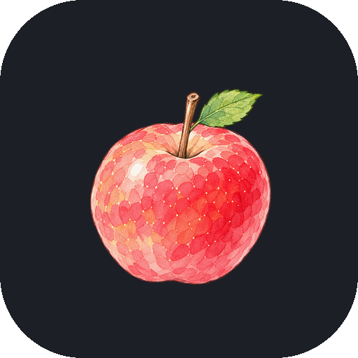

Fewest Pop最少先爆
Tap the fruit there are fewest of点击数量最少的水果
Fruit drifts down the screen. Tap the fully visible kind there are fewest of; when kinds tie, any of them is right. Each level gives three lives, and a wrong tap costs one.
水果从屏幕上方缓缓落下，点击完整可见、数量最少的那一种。数量并列时任选一种都对。每关 3 点生命，点错扣 1 点。
- Easy startA short lesson, then groups of ten levels that slowly build up.
- 轻松上手一段简短的新手教学，然后每 10 关一组，组内逐渐变难。
- Five skill fruitLightning grape, blast pomegranate, ice watermelon, heart strawberry and meteor starfruit. Tapping one always helps.
- 五种技能水果闪电葡萄、爆炸石榴、冰镇西瓜、爱心草莓、流星杨桃，点了一定生效。
- Skill partiesEvery tenth level is a party where skill fruit keep coming and a new skill unlocks.
- 技能狂欢关每组第 10 关，技能水果一直出现，解锁新技能。
- Play in peaceNo account, fully offline, no ads, no in-app purchases.
- 安心游玩无需账号，离线游玩，没有广告，没有内购。


Contact联系我们
Developer: Tessecos Studio开发团队：Tessecos Studio
Support email: 支持邮箱：tessecos@gmail.com